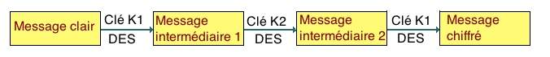

Cryptographie et codes secrets


 Cryptographie!
Cryptographie! Pourquoi n'utilise-t-on pas le double DES?
Lorsqu'à la fin des années 1990, le DES et sa clé de 56 bits est devenu définitivement trop faible pour résister à une attaque exhaustive, l'algorithme de chiffrement
qui fut adoptée comme solution provisoire de remplacement a été le triple DES, qui consiste en trois applications successives du DES, mais avec simplement deux clés différentes (on utilise la même clé pour le premier et le dernier chiffrement du DES). En tout, on utilise donc une clé de 2×56=112 bits.

Cela peut sembler tout de même un peu étrange : puisqu'on n'utilise que deux clés, pourquoi effectuer trois tours du DES, et par simplement deux tours.
Il se trouve que le double DES ne résite pas à l'attaque par le milieu!
Supposons qu'Alice envoie à Bob le message $M$ en utilisant le double DES avec les clés successives $K_1$ et
$K_2$. Elle transmet $C=f_{K_2}(f_{K_1}(M))$, où $f_K(M)$ est le chiffré de $M$ en utilisant DES avec la clé $K$.
Si Gilles intercepte la communication, et connait $M$ et $C$, voici comment il peut procéder, par une recherche exhaustive, pour retrouver les deux clés $K_1$ et
$K_2$. Il établit deux listes de $2^{56}$ messages :
$$L_1=\{f_K(M);\ K\textrm{ clé de 56 bits}\}\textrm{ et }L_2=\{f_{K}^{-1}(C);\ K\textrm{ clé de 56 bits}\}.$$
Il cherche ensuite dans les deux listes un élément commun, $R$. Cet élément vérifie donc
$$R=f_{K_3}(M)\textrm{ et }R=f_{K_4}^{-1}(C),$$
tout comme le premier message intermédiaire dans l'application du double DES, $f_{K_1}(M)$. S'il n'y a qu'un tel élément commun,
c'est forcément que $K_3=K_1$ et $K_4=K_2$.
Calculons le temps que celui lui aura pris. Pour générer les 2 listes, il lui faut environ $2^{57}$ opérations (chaque liste comporte $2^{56}$ éléments). Maintenant, quand on a deux listes de $m$ éléments, il faut en moyenne $O(m\ln m)$ opérations pour trouver un élément en commun (ou affirmer qu'il n'y en a pas). Ici, il faut donc environ $O(2^{57}log(2^{57}))$ opérations, ce qui est plus petit que $2^{63}$. L'utilisation de deux clés de 56 bits ne conduit finalement qu'à une sécurité comparable à celle d'une clé de 63 bits, et non 112 bits comme escompté. Moralité : il faut se méfier d'une prétendue taille de clé! Remarquons pour conclure
qu'une telle attaque par le milieu pourrait être applicable à n'importe quel autre algorithme que le DES.
Consulter aussi